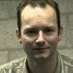

Wie zijn wij?
Veel medewerkers van dit project kennen elkaar alleen online. De bedoeling van deze pagina is om dit contact aan te vullen met wat persoonlijke informatie. De pagina is bedoeld voor iedereen die aan het project bijdraagt of heeft bijgedragen, of zich er op enige wijze bij betrokken voelt.
|
Simon Brouwer (Projectleider). E-mail: simonbr Woonplaats: Hoofddorp. Activiteiten onder andere: opzetten en onderhouden van nl.openoffice.org webpagina's, Nederlandstalige spellingcontrole, technische begeleiding helpvertaling, bijwerken GUI vertaling, builden van de OOo software voor Windows. C, HTML, Windows, Linux. Zie: meer informatie. |
|
|
Arthur Buijs (Co-lead). E-mail: arthur Interesse: open bestandsformaten, zodat de gebruiker ook in de toekomst zelf bepaalt welke software hij/zij wenst te gebruiken. Activiteiten, in samenwerking met anderen: vertaling, woordafbreking en organisatie gebruikersdag. Als Co-lead contacten onderhouden met mensen van de verschillende deelprojecten, en de Nederlandstalige gebruikers zoveel mogelijk betrekken bij nl.openoffice.org. |
|
 |
Luc Castermans. E-mail: luc Woonplaats: Tilburg (geboren Maastrichtenaar). Interesse: Meewerken aan een degelijk Office pakket, met open file formaten, en gedocumenteerde koppelingen naar andere tools. Activiteiten onder andere: vertaling van een document over het koppelen van OpenOffice.org aan MySQL. Ervaring met: C, Yacc/Lex, HTML, SQL. Grote waardering voor Unix. |
|
William van de Velde. E-mail: william Woonplaats: Hoogeveen. Werkzaam bij DTO. Ben verder bezig mij te verdiepen in grote projecten als Openoffice.org om de overstap naar een vrij OS te versnellen. Activiteiten: builden van de OOo software voor Linux. |
|
|
Bert Meersma. Email: broxtor Woonplaats: Leeuwarden. Motivatie: Laaiend enthousiast over OpenOffice.org en het is leuk om mee te werken aan iets waar zoveel mensen gebruik van (gaan) maken. Activiteiten: De vertaling van de helpbestanden coördineren, meewerken aan de vertaling van de helpbestanden en het nakijken van deze vertalingen. |
|
|
Remco Gerbrands, email: remco.gerbrands Woonplaats: Maastricht. Motivatie: Hetzelfde officepakket kunnen aanbieden aan eindgebruikers onafhankelijk van hun platform keuze als Windows, Linux, MacOS etc, met daarbij een open structuur en open standaard van het pakket zelf. Activiteiten: De vertalingen van de nederlandse helpfiles gestart en blijven begeleiden. |
|
|
Martijn Weisbeek. Email: openoffice Woonplaats: Deventer. Interesse: Opensource software biedt de mogelijkheid om zonder hoge kosten gebruik te maken van geavanceerde software; in het geval van het OpenOffice.org-project komt een office-pakket binnen het bereik van eenieder. Activiteiten onder andere: opzetten en onderhouden OpenOffice.org-startpagina: openoffice.pagina.nl, vertaling van eerste FAQ's, schrijven OpenOffice.org-recensie Breekpunt.nl |
|
|
Nolly Toenders. E-mail: n.toenders Woonplaats: Nijmegen. Motivatie: OO.o binnen het bereik van een groot aantal mensen brengen en nieuwe gebruikers op weg helpen. Activiteiten: Ik heb de handleiding voor Calc en een tweetal FAQ lijsten vertaald en bewerkt, Calc en Impress (deze vul ik aan met tips). Bezig met ontwikkelen van nieuw materiaal. Ik zet op de gebruikers mailinglist mijn kennis en ervaring zoveel mogelijk in. Ervaring: cursussen en materiaal ontwikkelen, trainen van gebruikers op nieuwe software. |
|
|
Cor Nouws. E-mail: cno Woonplaats: Arnhem. Betrokkenheid: houdt van eerlijke en open producten. Dus van OpenOffice.org. Heeft een eigen bedrijf, Nou&Off, dat professioneel ondersteuning voor OpenOffice.org en StarOffice verzorgt. Cor is actief in de OpenOffice.org-gemeenschap; het is leuk om met zoveel mensen samen aan een mooi product te werken en het wordt er ook sterker van. Bijdragen o.a. QA, marketing, en het ondersteunen van gebruikers via de mailinglijsten. |
|
|

|
Leon van Lare. E-mail: leon Woonplaats: Venray. Interesse: Ben groot voorstander van Open Source Software en draag dit uit via mijn privéwebsite. Betrokkenheid: als Unix/Linux-professional bij AT Consultancy in Nijmegen o.a. qa-testen van de Nederlandstalige Linuxversie van OpenOffice.org. |
Als je je ook wilt voorstellen op deze pagina, stuur dan een mailtje naar simonbr openoffice.org,
met een tekst van max. ca. 500 tekens. Suggestie: vermeld je naam, e-mailadres, woonplaats, wat je in
OpenOffice.org aantrekt, je activiteiten voor het project, relevante ervaring, ...
openoffice.org,
met een tekst van max. ca. 500 tekens. Suggestie: vermeld je naam, e-mailadres, woonplaats, wat je in
OpenOffice.org aantrekt, je activiteiten voor het project, relevante ervaring, ...
Als je meer informatie kwijt wilt, kun je een link naar een externe webpagina invoegen.
Een fotootje van jezelf is natuurlijk ook leuk; stuur een JPG, GIF of PNG bestand van 90 pixels hoog en tot 90 pixels breed.
Intro
Nieuws
Software
Beschrijving
Nieuw in 4.0.0
Downloaden
CD-ROM
OOo
Achtergronden
FAQ
Begrippenlijst
Hulp
Mailinglists
Gebruikersforum
Documentatie
Tips&trucs
Meehelpen
Projecten
Bugs melden
Contact
Mailinglists
Wie zijn wij?
Overig
Links
Licenties